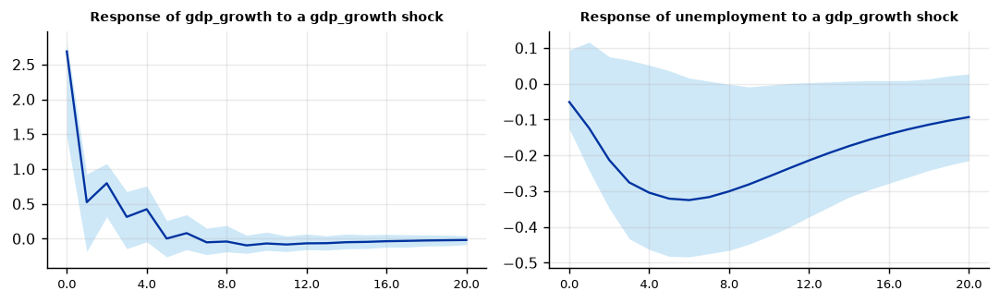
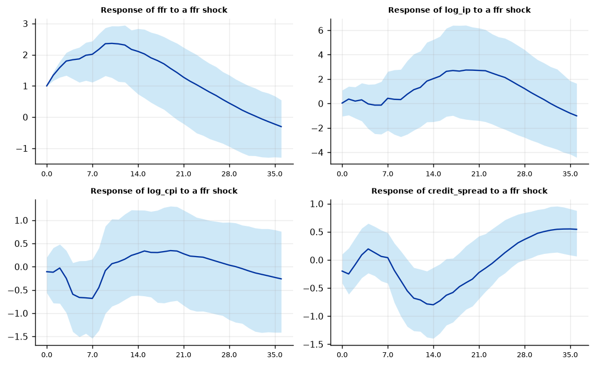

Run this model on your own data in Open Econometric Systems →
Step 1The question and the model
What does a structural shock do to the system? The reduced-form VAR is
and the residuals are linked to the structural shocks \(\varepsilon_t\) (uncorrelated, unit variance) by \(u_t = B \varepsilon_t\). The data give \(\Sigma = BB'\), which does not pin down \(B\): any rotation of \(B\) fits equally well, so identification needs \(n(n-1)/2\) extra restrictions. The impulse response of variable \(i\) to shock \(j\) at horizon \(h\) is then \(\Psi_h B\), where \(\Psi_h\) are the moving-average coefficients of the VAR.
Three schemes are common. Recursive (Cholesky): \(B\) is lower triangular, so a variable ordered earlier does not respond to later shocks within the period. Long-run restrictions: the cumulative effect of some shocks on some variables is zero, for example demand shocks have no permanent effect on output (Blanchard and Quah 1989). External instrument (proxy-SVAR): a series \(z_t\) correlated with one structural shock and uncorrelated with the others identifies that shock's column of \(B\) (Stock and Watson 2012, Mertens and Ravn 2013).
Three checks before you trust a structural VAR
- Can you defend the identifying assumption in words? The restrictions are not tested by the data (a recursive or long-run scheme is exactly identified). Write down the economic argument, and test how much the answer depends on it by changing the ordering or the scheme.
- Is the VAR well specified? Stationary or differenced variables, enough lags to leave the residuals white, and a stable system. Long-run identification also needs a stationary VAR.
- Is the instrument valid (proxy-SVAR)? Relevance is testable (the first-stage F statistic) and exogeneity is not, so the argument for exogeneity must come from how the instrument was built.
How to write it: the model
We estimate a structural VAR for real GDP growth and the unemployment rate and identify supply and demand shocks with the long-run restriction of Blanchard and Quah (1989): only the supply shock has a permanent effect on the level of output. The VAR has four lags, a compromise between the Akaike criterion (eight lags) and the Schwarz and Hannan-Quinn criteria (two lags); two, six and eight lags are robustness checks. Confidence bands are 95% percentile intervals from a wild residual bootstrap with 500 replications, which is robust to heteroskedasticity. We check the result against a recursive identification with both orderings.
Step 2Load the data and check the variables
import numpy as np
import pandas as pd
import oes_engine as oes # pip install -e open-econometric-systems/oes-engine
from statsmodels.tsa.stattools import adfuller, kpss
data = open("yield.csv").read()
df = pd.read_csv("yield.csv")[["date", "gdp_growth", "unemployment"]].dropna()
print(df.date.iloc[0], "to", df.date.iloc[-1], "|", len(df), "quarters")
print(df[["gdp_growth", "unemployment"]].describe().round(2).loc[["mean", "std", "min", "max"]])
for c in ["gdp_growth", "unemployment"]:
print(f"{c:12s} ADF p = {adfuller(df[c], autolag='AIC')[1]:.3f} KPSS p = {kpss(df[c], nlags='auto')[1]:.3f}")1960Q1 to 2019Q4 | 240 quarters
gdp_growth unemployment
mean 3.01 5.97
std 3.25 1.61
min -8.85 3.40
max 15.17 10.67
gdp_growth ADF p = 0.000 KPSS p = 0.059
unemployment ADF p = 0.045 KPSS p = 0.100How to read it
The sample has 240 quarters (1960Q1-2019Q4). Real GDP growth (annualised) averages 3.01% with a standard deviation of 3.25; the unemployment rate averages 5.97% with a standard deviation of 1.61. Both series are treated as stationary: the ADF test rejects a unit root for growth (p < 0.001) and for unemployment (p = 0.045, borderline), and the KPSS test does not reject stationarity for either (p = 0.059 and p = 0.10). Unemployment is very persistent, which is why the largest VAR root is close to one. Long-run identification needs a stationary VAR, so this check matters.
Step 3Choose the lags and check stability
r = oes.run("svar", data, dict(vars=["gdp_growth", "unemployment"], time="date", identification="longrun", horizon=20, boot=50))
oes.show(r, "Lag-order")
oes.show(r, "Stability")Lag-order selection
AIC BIC HQIC FPE
Lags
0 3.2909 3.3206 3.3029 26.8665
1 -0.7553 -0.6661 -0.7193 0.4699
2 -1.0870 -0.9385 -1.0271 0.3372
3 -1.1113 -0.9033 -1.0274 0.3291
4 -1.1175 -0.8501 -1.0097 0.3271
5 -1.0946 -0.7677 -0.9628 0.3347
6 -1.0862 -0.6999 -0.9304 0.3376
7 -1.1055 -0.6598 -0.9257 0.3312
8 -1.1196 -0.6145 -0.9159 0.3266
Note: Used: 8 lag(s) (chosen by AIC).
Stability
Statistic p-value Detail
Test
Stability: largest root modulus 0.9305 None stable if below 1 (a level VAR with unit roots is near 1)How to read it
The Akaike criterion keeps falling slowly up to eight lags (-1.120), but most of the gain comes by two lags (-1.087 against -1.118 at four). The Schwarz and Hannan-Quinn criteria both choose two lags. We use four lags as a compromise and test two, six and eight below. With eight lags the largest root of the VAR is 0.93, so the system is stable and the long-run restriction is well defined.
Step 4Identify with long-run restrictions (Blanchard–Quah)
spec = dict(vars=["gdp_growth", "unemployment"], time="date", identification="longrun", lags=4, horizon=20, boot=500)
supply = oes.run("svar", data, dict(spec, shock="gdp_growth"))
demand = oes.run("svar", data, dict(spec, shock="unemployment"))
oes.show(supply, "Long-run impact")
oes.show(supply, "Share of forecast-error variance")
oes.show(demand, "Share of forecast-error variance")
oes.plot(supply, "Response of", ncols=2, size=(4.2, 2.6))Long-run impact matrix
shock gdp_growth shock unemployment
Variable
gdp_growth 3.9656 0.0000
unemployment -5.2331 6.1225
Note: Zeros above the diagonal are the identifying restrictions: shock j has no long-run effect on variables ordered before it.
Share of forecast-error variance explained by the gdp_growth shock (%)
h = 1 h = 4 h = 8 h = 20
Variable
gdp_growth 87.38 81.85 81.02 80.44
unemployment 4.91 20.62 31.13 38.43
Note: Computed from the point estimates.
Share of forecast-error variance explained by the unemployment shock (%)
h = 1 h = 4 h = 8 h = 20
Variable
gdp_growth 12.62 18.15 18.98 19.56
unemployment 95.09 79.38 68.87 61.57
Note: Computed from the point estimates.
How to read it
The long-run impact matrix shows the identifying restriction: the entry for the effect of the unemployment ("demand") shock on GDP growth is exactly zero, so only the supply shock moves the level of output permanently. The supply shock raises the cumulated response of annualised growth by 3.97, which is about 1% of the level of output. The supply shock explains 87% of the forecast-error variance of GDP growth at one quarter and 80% at five years, and 5% of that of unemployment at one quarter, rising to 38% at five years. The demand shock explains 95% of the variance of unemployment at one quarter and 62% at five years, and 13% to 20% of that of GDP growth.
rows = lambda r, v: [x for x in r["tables"][0]["rows"] if x[0] == v]
for name, r in [("supply shock", supply), ("demand shock", demand)]:
print(name)
for v in ["gdp_growth", "unemployment"]:
print(" ", v, [(x[1], x[2], x[3], x[4]) for x in rows(r, v) if x[1] in (0, 4, 8, 20)])supply shock gdp_growth [(0, 2.687724, 1.462895, 2.821603), (4, 0.423165, -0.044399, 0.756218), (8, -0.040145, -0.187534, 0.189196), (20, -0.018257, -0.084112, 0.043662)] unemployment [(0, -0.050894, -0.126485, 0.094414), (4, -0.304227, -0.463024, 0.052183), (8, -0.300401, -0.46549, -0.001463), (20, -0.09296, -0.214784, 0.027334)] demand shock gdp_growth [(0, -1.021452, -2.368358, 0.029466), (4, 0.101285, -0.256146, 0.369106), (8, 0.165233, 0.023071, 0.413832), (20, 0.013091, -0.042316, 0.110958)] unemployment [(0, 0.224019, 0.181319, 0.22641), (4, 0.4472, 0.268933, 0.59008), (8, 0.319513, 0.143509, 0.489021), (20, 0.082927, -0.054683, 0.167637)]
How to read it
A supply shock raises GDP growth by 2.69 points on impact (band 1.46 to 2.82), 0.42 after one year, and the effect dies out after two years, which leaves the level of output permanently higher. Unemployment falls by 0.30 points after four to eight quarters (band at four quarters -0.46 to 0.05, at eight quarters -0.47 to 0.00), a borderline-significant decline that fades by year five. The demand-side shock raises unemployment by 0.22 points on impact and 0.45 after one year, and lowers GDP growth by 1.02 points on impact (band -2.37 to 0.03), after which growth is above its baseline (0.17 at two years, band 0.02 to 0.41) as unemployment returns to normal. The unemployment response is back to zero within five years (band -0.05 to 0.17), as the identification requires for the demand shock.
Step 5Compare with a recursive identification
chol = {}
for order in (["gdp_growth", "unemployment"], ["unemployment", "gdp_growth"]):
for shock in order:
r = oes.run("svar", data, dict(vars=order, time="date", identification="cholesky", lags=4, horizon=20, boot=100, shock=shock))
chol[(" -> ".join(order), shock)] = {v: [x[2] for x in rows(r, v) if x[1] in (0, 4, 8, 20)] for v in order}
for k, v in chol.items():
print(k, {a: [round(z, 2) for z in b] for a, b in v.items()})('gdp_growth -> unemployment', 'gdp_growth') {'gdp_growth': [2.88, 0.36, -0.1, -0.02], 'unemployment': [-0.13, -0.44, -0.39, -0.12]}
('gdp_growth -> unemployment', 'unemployment') {'gdp_growth': [0.0, 0.25, 0.14, 0.01], 'unemployment': [0.19, 0.31, 0.19, 0.04]}
('unemployment -> gdp_growth', 'unemployment') {'unemployment': [0.23, 0.5, 0.38, 0.1], 'gdp_growth': [-1.59, 0.01, 0.17, 0.02]}
('unemployment -> gdp_growth', 'gdp_growth') {'unemployment': [0.0, -0.2, -0.22, -0.07], 'gdp_growth': [2.39, 0.44, -0.0, -0.01]}How to read it
The recursive schemes give the same shapes but different impact effects, because each ordering assumes away one of the two contemporaneous responses. With growth ordered first, a growth shock lowers unemployment by 0.44 after one year and 0.39 after two; an unemployment shock has no effect on growth on impact by assumption. With unemployment ordered first, the unemployment shock raises unemployment by 0.50 after one year and lowers growth by 1.59 on impact. The long-run scheme (-1.02 on impact) lies between the two. The persistence of the unemployment response (a peak of 0.31 to 0.50 after about a year, mostly gone after five years) is similar in all three, so the conclusion about dynamics does not depend on the identification, while the impact effect of the unemployment shock on growth does.
Step 6Proxy-SVAR: check the instrument before the responses
mp = open("monetary_proxy.csv").read()
for ind in ["gs1", "ffr"]:
spec_p = dict(vars=[ind, "log_ip", "log_cpi", "credit_spread"], shock=ind, identification="proxy", instrument=["mp_shock"], time="date",
lags=12, horizon=36, boot=300)
rp = oes.run("svar", mp, spec_p)
F = [s["value"] for s in rp["summary"] if s["label"] == "First-stage F"][0]
print(f"policy indicator {ind}: first-stage robust F = {F:.1f}")
oes.show(rp, "Instrument")policy indicator gs1: first-stage robust F = 4.5
Instrument and stability
Statistic p-value Detail
Test
Stability: largest root modulus 0.9978 None stable if below 1 (a level VAR with unit roots is near 1)
First stage: robust F 4.4480 None instrument relevance; below 10 signals a weak instrument
First stage: R-squared 0.0257 None 347 observations with a non-missing instrument
policy indicator ffr: first-stage robust F = 17.4
Instrument and stability
Statistic p-value Detail
Test
Stability: largest root modulus 0.9973 None stable if below 1 (a level VAR with unit roots is near 1)
First stage: robust F 17.4410 None instrument relevance; below 10 signals a weak instrument
First stage: R-squared 0.0486 None 347 observations with a non-missing instrumentHow to read it
The same instrument gives very different first stages depending on the policy indicator it is paired with. For the one-year Treasury yield the robust first-stage F is 4.4 (R-squared 0.026): the instrument is weak and the engine's warning applies, so the responses would be unreliable. For the federal funds rate the F is 17.4 (R-squared 0.049), above the rule-of-thumb value of 10. Choose the policy indicator and the sample for reasons stated in advance and report the F statistic for the choice you use, not for the best of several; exogeneity of the instrument cannot be tested.
rp = oes.run("svar", mp, dict(spec_p, vars=["ffr", "log_ip", "log_cpi", "credit_spread"], shock="ffr"))
oes.plot(rp, "Response of", ncols=2, size=(4.2, 2.6))
for v in ["ffr", "log_ip", "log_cpi", "credit_spread"]:
print(v, [(x[1], x[2], x[3], x[4]) for x in rows(rp, v) if x[1] in (0, 12, 24, 36)])ffr [(0, 1.0, 1.0, 1.0), (12, 2.310243, 1.121192, 2.944452), (24, 0.920184, -0.588714, 1.851972), (36, -0.305213, -1.293137, 0.546553)] log_ip [(0, 0.036598, -1.04351, 1.089464), (12, 1.318546, -1.918993, 4.290218), (24, 2.306006, -1.923357, 5.453535), (36, -1.011071, -4.419888, 1.645684)] log_cpi [(0, -0.107708, -0.561073, 0.202405), (12, 0.162221, -0.707619, 1.131144), (24, 0.204431, -0.957407, 1.028917), (36, -0.261379, -1.41324, 0.759688)] credit_spread [(0, -0.198793, -0.413386, 0.101771), (12, -0.711947, -1.272514, -0.16568), (24, 0.032432, -0.312412, 0.630101), (36, 0.544604, 0.066449, 0.877561)]

How to read it
The shock is scaled to raise the federal funds rate by one percentage point on impact. The rate peaks at 2.31 points after twelve months (band 1.12 to 2.94) and returns to the baseline by month 36. Industrial production rises insignificantly (1.32 after twelve months, band -1.92 to 4.29), and prices are close to zero throughout (-0.11 on impact, 0.20 after 24 months, bands including zero). The credit spread falls by 0.71 after twelve months (band -1.27 to -0.17). The estimates are too imprecise to say anything about the real effect of monetary policy; they show the workflow, and they show how wide proxy-SVAR bands can be with a short sample and a weak-to-moderate instrument.
Step 7Robustness: lags, transformation and bootstrap
base = dict(vars=["gdp_growth", "unemployment"], time="date", identification="longrun", shock="gdp_growth", horizon=20)
variants = {"4 lags": dict(lags=4), "2 lags": dict(lags=2), "6 lags": dict(lags=6), "8 lags": dict(lags=8),
"90% band": dict(lags=4, level="90"), "different seed": dict(lags=4, seed=777)}
out = {}
for name, v in variants.items():
r = oes.run("svar", data, dict(base, boot=200, **v))
g = lambda var, h: [x for x in rows(r, var) if x[1] == h][0]
out[name] = [g("gdp_growth", 0)[2], g("unemployment", 4)[2], g("unemployment", 4)[3], g("unemployment", 4)[4]]
print(pd.DataFrame(out, index=["GDP growth impact", "unemployment h=4", "lower", "upper"]).T.round(3))GDP growth impact unemployment h=4 lower upper 4 lags 2.688 -0.304 -0.447 -0.002 2 lags 2.660 -0.248 -0.421 0.092 6 lags 2.617 -0.295 -0.483 0.123 8 lags 2.691 -0.351 -0.506 -0.036 90% band 2.688 -0.304 -0.438 -0.036 different seed 2.688 -0.304 -0.484 -0.001
How to read it
The impact response of GDP growth is almost unchanged (2.62 to 2.69) with two, four, six or eight lags, and the response of unemployment after one year is between -0.25 and -0.35. The upper end of the 95% band is just below zero with four and eight lags and just above it with two and six, so the borderline significance of that response depends on the lag length; the 90% band excludes zero (-0.44 to -0.04). Changing the bootstrap seed moves the band limits in the second decimal place only.
Step 8Write the results
How to write it: results
A supply shock identified with the long-run restriction of Blanchard and Quah (1989) raises GDP growth by 2.69 percentage points (annualised) on impact and 0.42 points after four quarters, with a permanent effect on the level of output of about 1%. Unemployment falls by about 0.3 percentage points after one to two years, a response that is borderline significant at the 5% level (95% band -0.46 to 0.05 after four quarters, -0.47 to 0.00 after eight) and fades within five years. The supply shock explains 80% of the forecast-error variance of GDP growth and 38% of that of unemployment at a five-year horizon. A demand-side shock raises unemployment by 0.45 points after one year with no permanent effect on output. The shape of the responses is similar under recursive identifications with either ordering, which differ mainly in whether unemployment shocks move growth within the quarter (0 or -1.59 against -1.02 here). The results are stable across two to eight lags (impact on growth 2.62 to 2.69).
| Report | What | Where |
|---|---|---|
| Model | Variables, lags, identification, bootstrap | Step 1 |
| Data | Stationarity checks | Step 2 |
| Specification | Lag selection, stability | Step 3 |
| Estimates | Impulse responses, variance shares, long-run matrix | Step 4 |
| Sensitivity | Recursive orderings against the long-run scheme | Step 5 |
| Instrument | First-stage strength, responses | Step 6 |
| Robustness | Lags, band level, seed | Step 7 |
References. Blanchard, O. and Quah, D. (1989), "The Dynamic Effects of Aggregate Demand and Supply Disturbances," American Economic Review 79. Gertler, M. and Karadi, P. (2015), "Monetary Policy Surprises, Credit Costs, and Economic Activity," American Economic Journal: Macroeconomics 7. Jarociński, M. and Karadi, P. (2020), "Deconstructing Monetary Policy Surprises," American Economic Journal: Macroeconomics 12. Mertens, K. and Ravn, M. (2013), "The Dynamic Effects of Personal and Corporate Income Tax Changes in the United States," American Economic Review 103. Stock, J. and Watson, M. (2012), "Disentangling the Channels of the 2007–09 Recession," Brookings Papers on Economic Activity. Sims, C. (1980), "Macroeconomics and Reality," Econometrica 48.